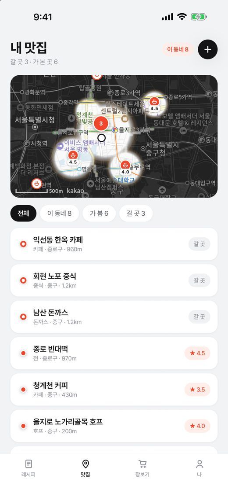
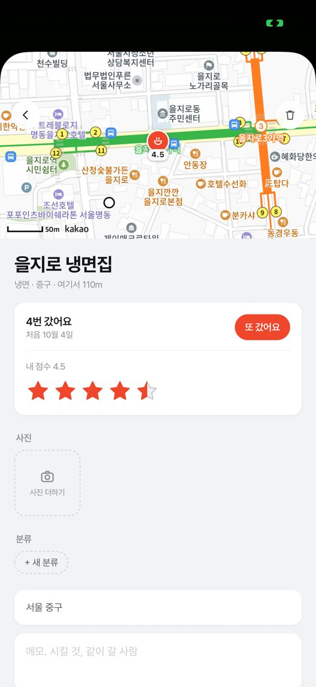
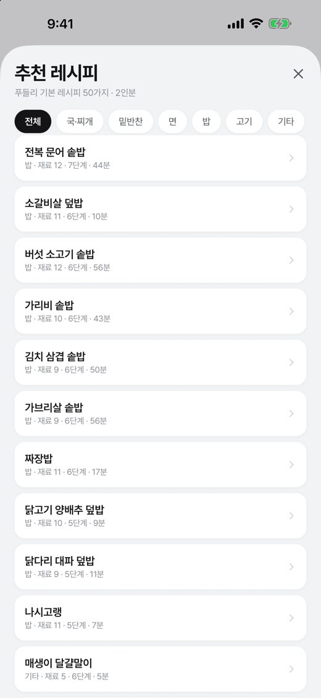
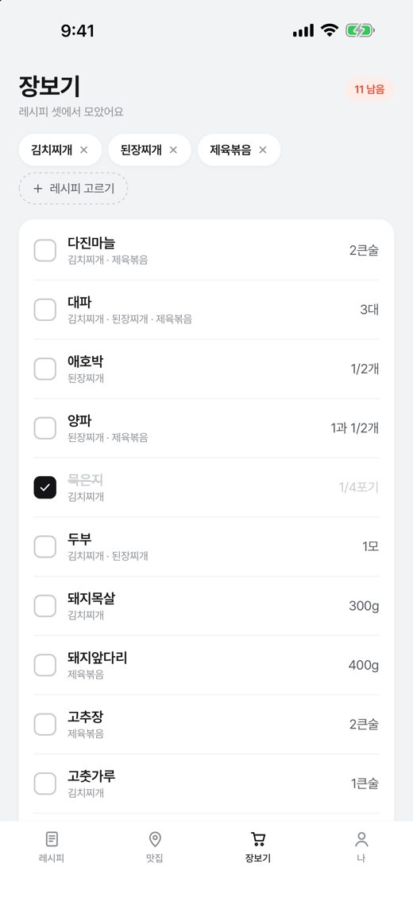
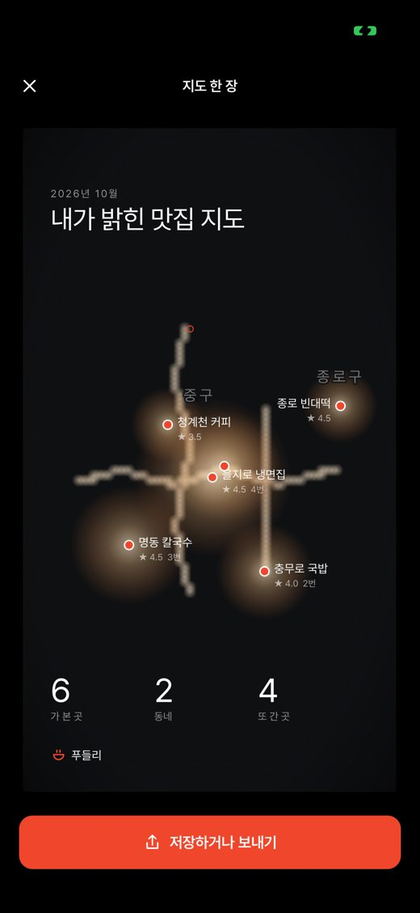

요리하는 손은 늘 젖어 있어서 화면을 못 만집니다. 푸들리는 폰을 보고 주먹을 쥐었다 펴면 다음 단계로 넘어갑니다. 타이머는 저절로 돌고, 그 단계에 쓰는 재료만 보여 줍니다.
우리가 쓰던 보관 도구에서 직접 세어 봤습니다. 담기는 하루 열 건씩 꾸준했는데, 다시 연 것은 일곱 개 중 하나였습니다. 그래서 푸들리는 담는 앱이 아니라 쓰는 순간에 꺼내 주는 앱으로 만들었습니다.
한 단계씩 크게. 주먹으로 넘기고, 타이머는 저절로.
고른 레시피의 재료를 한 줄로 합쳐 줍니다.
담아 둔 맛집 중 지금 동네의 곳을 먼저.
「혹시 다녀오셨나요?」 점수와 사진이 쌓입니다.
어두운 지도에서 가 본 곳 둘레만 원래 색이 돌아옵니다. 자주 갈수록 넓게, 가 본 곳이 몰린 동네일수록 크게. 아래 지도에서 점을 눌러 「가 봤어요」를 해 보세요.


푸들리가 새로 쓴 2인분 기본 레시피 50가지가 들어 있습니다. 직접 적거나, 가진 PDF 레시피북에서 가져올 수도 있습니다. 만들 레시피를 고르면 같은 재료는 한 줄로 합쳐집니다. 직접 골라 보세요.


가 본 곳과 다닌 길로 그린 밤 지도를 인스타그램 스토리 크기로 저장하거나 보냅니다. 남의 지도를 캡처한 게 아니라 푸들리가 직접 그린 그림입니다.

먹는 기록은 사적인 기록입니다.
가입도 로그인도 없습니다. 열면 바로 씁니다.
레시피, 사진, 다녀온 곳, 다닌 길. 어디에도 올리지 않습니다.
손짓을 볼 때도 카메라는 손 모양만 보고 바로 버립니다.
분석 도구도 광고 식별자도 쓰지 않습니다.
카메라는 손의 모양만 봅니다. 물기와 상관없이 주먹을 쥐었다 펴는 모양이 보이면 넘어갑니다. 잘 안 될 때나 손이 말랐을 때는 아래 큰 단추로 넘기면 됩니다.
「이전」을 누르면 됩니다. 푸들리는 손짓 직후 되돌린 횟수를 기록해서 손짓을 계속 다듬습니다. 손짓이 거슬리면 「나」 탭에서 끌 수 있습니다.
아니요. 가 본 곳을 담기만 해도 그 둘레가 밝아집니다. 「다녀온 곳 물어보기」와 「다닌 길 밝히기」는 원할 때만 켜는 선택 기능입니다.
집에서 많이 해 먹는 요리를 골라 푸들리가 2인분 기준으로 새로 썼습니다. 분량과 시간이 다르면 고쳐 쓸 수 있고, 내 레시피북에 담은 뒤에는 내 것입니다.
계정이 없어서 iOS 백업으로 옮겨집니다. 서버에 따로 모아 두지 않습니다.